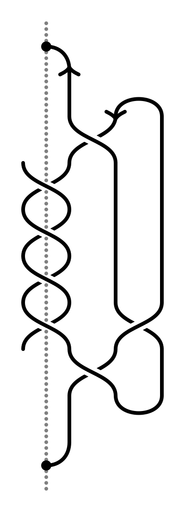

show all invariants|show all metadata
Input data and context

% s.l2.x1.x0.x0.x0.x0.y2.x1.u2
s.l2.x1.x0.x0.x0.x0.y2.x1.u2
,1
% Simplifies with options '-qs' to r0.y1.r2.x1.x1.x0.x0.x1.x1.x0.x0.x1.x1.x0.x0.x1.x1.l5.y4.y3.l4.x5.y4.y3.x6.y5.y4.y4.y3.u2.y3.x0.x1.u2.u0.x1.x1.x1.x1.x1.x1.x1.x1.x1.x1.x1.x1.x1.x1
Bar-Natan multicurve \(\mathrm{\widetilde{BN}}(T)\)
options -c2-qs
(diagram)
(metadata)
% file 'examples/words/wbd7c1610bb80/cxBNr-c2-qs', generated by kht++ 0.1 on Mon Nov 16 17:54:35 2026 UTC
1) h^ 1 q^-18 δ^ -10 ⬮~~S~>⬯—>⬯~>⬯—>⬯~>⬮—>⬮<~⬯<—⬯<~⬯<—⬯<~⬮<—
2) h^ -3 q^-24 δ^ -9 ⬮~~S~>⬯—>⬯~>⬯—>⬯~>⬮—>⬮<~⬯<—⬯<~⬯<—⬯<~⬮<—
3) h^ -7 q^-30 δ^ -8 ⬮~~S~>⬯—>⬯~>⬯—>⬯~>⬮—>⬮<~⬯<—⬯<~⬯<—⬯<~⬮<—
4) h^-16 q^-47 δ^-15/2 ⬯——D—>⬯~>⬯—>⬯~>⬯—>⬯~>⬯—>⬯~>⬯—>⬯~>⬯—>⬯~>⬮<—⬮~>⬯—>⬯~>⬯—>⬯~>⬮
Khovanov multicurve \(\mathrm{\widetilde{Kh}}(T)\)
options -c2-qs
(diagram)
(metadata)
% file 'examples/words/wbd7c1610bb80/cxKhr-c2-qs', generated by kht++ 0.1 on Mon Nov 16 17:54:35 2026 UTC
1) h^ 0 q^-19 δ^-19/2 ⬮~~S~>⬯—>⬯~>⬯—>⬯~>⬮—>⬮<~⬯<—⬯<~⬯<—⬯<~⬮<— s4(∞) q^-14 δ_^-10
2) h^ 1 q^-17 δ^-19/2 ⬮~~S~>⬯—>⬯~>⬯—>⬯~>⬮—>⬮<~⬯<—⬯<~⬯<—⬯<~⬮<— s4(∞) q^-12 δ_^-10
3) h^ -4 q^-25 δ^-17/2 ⬮~~S~>⬯—>⬯~>⬯—>⬯~>⬮—>⬮<~⬯<—⬯<~⬯<—⬯<~⬮<— s4(∞) q^-20 δ_^-9
4) h^ -3 q^-23 δ^-17/2 ⬮~~S~>⬯—>⬯~>⬯—>⬯~>⬮—>⬮<~⬯<—⬯<~⬯<—⬯<~⬮<— s4(∞) q^-18 δ_^-9
5) h^ -8 q^-31 δ^-15/2 ⬮~~S~>⬯—>⬯~>⬯—>⬯~>⬮—>⬮<~⬯<—⬯<~⬯<—⬯<~⬮<— s4(∞) q^-26 δ_^-8
6) h^ -7 q^-29 δ^-15/2 ⬮~~S~>⬯—>⬯~>⬯—>⬯~>⬮—>⬮<~⬯<—⬯<~⬯<—⬯<~⬮<— s4(∞) q^-24 δ_^-8
7) h^ -6 q^-27 δ^-15/2 ⬮~~S~>⬯—>⬯~>⬯—>⬯~>⬮—>⬮<~⬯<—⬯<~⬯<—⬯<~⬮<— s4(∞) q^-22 δ_^-8
8) h^-17 q^-48 δ^ -7 ⬯~~S^2~>⬯—>⬯~>⬯—>⬯~>⬯—>⬯~>⬯—>⬯~>⬯—>⬯~>⬯—>⬯~>⬮<—⬮<~⬯<—⬯<~⬯<—⬯<~⬯<—⬯<~⬯<—⬯<~⬯<—⬯<~⬯<— r(12) q^-456/13 δ|^-15/2